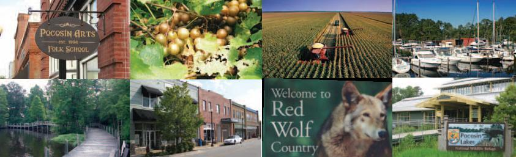

About Us
Tyrrell County is one of North Carolina’s oldest counties, founded in 1729 and named for Sir John Tyrrell, one of the Lord’s Proprietors of the Carolinas.
Located in northeastern North Carolina, Tyrrell County is bordered on the north by the Albemarle Sound, on the south by Hyde County, on the east by the Alligator River and Dare County, and on the west by Washington County. It is located approximately 150 miles east of the Triangle Area (Raleigh/Durham/Chapel Hill) and 100 miles south of Tidewater Virginia (Norfolk/Chesapeake/Virginia Beach). The county has a total area of 600 square miles of which 390 square miles is comprised of land and 210 square miles of water.
The county seat and only municipality is Columbia, located on the banks of the Scuppernong River. The county is divided into five townships – Alligator, Columbia, Gum Neck, Scuppernong, and South Fork.
According to the 2010 United States’ census, the population of the county was 4,407, making it the least populous county in the state. Agri-business, commercial fishing, forestry, and tourism contribute to the economy. Access to water and the abundance of forest land and wildlife for recreational fishing and hunting are valuable assets of the county.